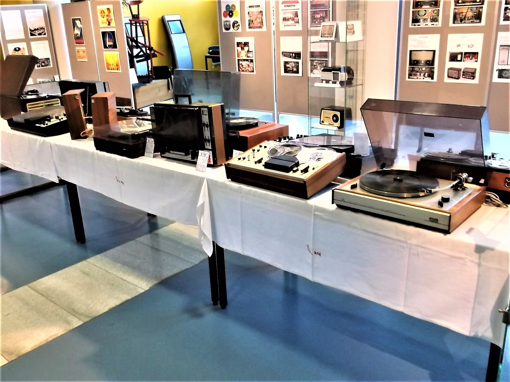

-
Prvních deset let (1969 - 1979)
Na začátku se konala řada schůzek s účastí asi 20 lidí se zaměřením na gramofonovou techniku a zesilovače. V tomto období měl klub již přes 300 členů. Celková činnost klubu byla rozdělena do sekcí a to konstrukční činnost, ozvučování a audiovizuální tvorby. Členové klubu se pravidelně zúčastňovali soutěží v technické tvořivosti, festivalů v audiovizuální tvorbě a pořádali řadu technických seminářů. Sekce audiovizuální tvorby připravila celou řadu pořadů, jako např. o skupinách Beatles, Black Sabath a Led Zeppelin. Takto koncipované večery byly vždy hojně navštěvovány příznivci z Liberce a okolí. Dále byly připravovány poslechové večery vážné hudby o dílech J. Suka, A. Dvořáka, B. Smetany a dalších hudebních skladatelích.
Pro zvýšení odborné úrovně členů klubu byly pořádány technické semináře. Byly organizovány četné exkurze do celé řady zajímavých technických pracovišť, jako byl televizní vysílač na Ještědu, nebo pracoviště Československého rozhlasu studia Liberec. Největším problémem v té době bylo, že klub neměl svou klubovnu. V polovině sedmdesátých let byla započata rekonstrukce přidělených prostor ve starším domě u autobusového nádraží.
-
Druhých deset let (1980 - 1990)
Byly opuštěny nedodělané a vlhké prostory klubu ve sklepení domu u autobusového nádraží. Klub získal prostory v rohovém domě ve Svojsíkově ulici (dnešní restaurace U Medvěda). Opět nastala obtížná práce s adaptací suterénních prostor. Výsledkem byla dobře vybavená dílna pro praktickou činnost členů. V dalších místnostech bylo, na tu dobu perfektně zařízené zvukové studio, které bylo později doplněno videotechnikou. Klubovna přispěla k dalšímu rozvoji klubu, hlavně technické činnosti jeho členů. Byly vyráběny reprosoustavy, zesilovače a také měřící přístroje. Naplno pracuje parta členů, kteří připravovali audiovizuální pořady, které měly velký ohlas. Tehdejší ředitel hudební školy v Liberci umožnil klubu za malý poplatek užívat velký sál této školy. Tím bylo umožněno použití veškeré dostupné audiovizuální techniky, a díky kapacitě sálu i účast stovkám posluchačů. Byly uváděny pořady „Beatles“, „Nemohu se dotknout slunce“, A tak se dříve hrálo“ a řada jiných. Bylo to jedno z nejslavnějších období klubu. Po několika letech se tato úspěšná parta lidí rozpadla. Členové klubu ozvučovali celou řadu akcí a vlastní klub pak organizoval akce pro své členy. Na konci tohoto období vzniká kroužek výpočetní techniky. V listopadu roku 1989 byla koupena první klubová kamera Panasonic M7 systém VHS za tehdy neuvěřitelných 93 000,- Kč. Tato kamera byla v následujícím obdobím dalším zlomem v činnosti klubu.
-
Třetích deset let (1991 - 2000)
Po koupi kamery vše vypadalo nadějně pro další činnost klubu. Ale hned první zakázka od města na výrobu filmu z návštěvy německé delegace v Liberci nebyla klubem úspěšně provedena. Další negativní okolností bylo, že vzhledem k celospolečenským událostem a možností zakoupení kvalitní zahraniční techniky, opouští klub řada členů. Přichází však jedna pozitivní věc a to počátek spolupráce s tehdy druholigovým fotbalovým klubem Slovan Liberec. Začaly se pořizovat videozáznamy z fotbalových utkání a zajišťováno ozvučení stadionu. Nově sestavený tým začal s výrobou prezentačních filmů. Byla koupena kamera Panasonic MS4 a video JVC 6900 SVHS. V klubu zůstává jen malá část členů která se snažila činnost klubu udržet. Z důvodu stále vyššího nájmu a malého počtu členů klub opouští v prosinci 1995 pracně vybudovanou klubovnu ve Svojsíkově ulici. Ke konci devadesátých let se začalo klubu opět dařit. Byly stavěny velké reprosoustavy a zvukařské sestavy pro zkvalitnění klubem prováděných ozvučení.
-
Období let 2000 - 2008
Je rozhodnuto o budování prvního digitálního videostudia v Liberci a k realizaci tohoto rozhodnutí si klub vzal vysoký úvěr. Významným uměleckým dílem bylo zpracování historie hejnického kláštera ve čtyřech jazykových mutacích. Natáčení, střih a následné namluvení trvalo rok. Důležitým mezníkem v činnosti klubu byl rok 2004. Byla vybudována nová klubovna která byla velmi dobře technicky vybavena a umožňovala digitální zpracování jak zvuku tak i obrazu. Do klubu přichází noví členové a přináší zkvalitnění celkové činnosti klubu. Proto byl klub schopen, spolu s TV BONUS, v roce 2006 zajišťovat přímý přenos oslavy titulu mistra ligy FC Slovanu Liberec, která proběhla na libereckém náměstí před radnicí za účastí tisíců fanoušků. Z této mimořádně technicky náročné akce byl také vyroben film. Další společnou akcí s TV Bonus bylo zajišťování internetových přenosů z hokejových zápasů Bílých tygrů. Opět byl k dispozici celý audio a video řetězec, který byl obsluhován s větší části našimi členy.
Nastalo období bohaté na činnost klubu která byla rozdělena do několika oblastí. Na prvním místě to byla vlastní klubová činnost, dále pak činnost pro jiné organizace a prezentace naší činnosti pro širokou veřejnost. Stále se zintenzivňovala spolupráce s libereckými sportovními kluby. Bylo zajišťováno ozvučení a videozáznamy z Jizerské 50, jak na lyžích tak i na kolech, sletů Sokola v Liberci a Turnově, házenkářských turnajů mládeže, ozvučovaly se lyžařské světové poháry (skoky na lyžích na Ještědu a závody sdruženářů), ozvučovaly se závody na ploché dráze a hlavně se dále prohloubila spolupráce se Slovanem Liberec. Členové klubu zajistili projekt ozvučení stadionu Slovanu Liberec u Nisy včetně přípojných míst pro kamery, zvukových linek a propojení na velkoplošnou obrazovku. Dále také navrhli a zrealizovali ozvučení fotbalového stadionu v Doubí. Vyvrcholením tohoto období bylo v roce 2008, ke 40 letům klubu, uspořádání výstavy „Magnetofony“ v Severočeském muzeu v Liberci. Výstava byla zahájena generálním ředitelem České rozhlasu panem ing. Václavem Kasíkem a za účasti ředitelky rozhlasové stanice Sever paní Mgr. Aleny Škraňkové, ředitele muzea a dalších hostů. Z výstavy byly pořizovány záznamy České televize a TV Genus včetně rozhlasových reportáží. Svým rozsahem, zaměřením (vystaveno přes 100 magnetofonů a další exponáty) a významem patřila výstava k největším pořádaným v České republice. Byla to důstojná oslava kulatého výročí činnosti klubu
-
Období po roce 2008
Byla doplněna technika o aktivní a pasivní reproduktorové soustavy, koupena nová kvalitní kamera, notebook a další věci, které dále posunuly kvalitu práce členů klubu. V roce 2015 klub uspořádal dvě výstavy. Ta první byla v obchodním centru PLAZA s názvem MAGNETOFONY & RÁDIA a druhá, návazně, v prostorech Krajského úřadu Libereckého kraje kde vedle magnetofonů a rádií byly vystaveny gramofony. Obě výstavy byly doplněny o výtvarné objekty. Výstavy dokumentovaly jak výrobky značky TESLA tak i schopnosti členů klubu takové výstavy uspořádat.
Členové klubu pomáhali při realizaci nové audio a video režie na stadionu Slovanu Liberec kde navíc, kromě videozáznamů a ozvučení, zvládli připravovat náplň a obsluhu velkoplošné obrazovky. Dále členové klubu navrhli a realizovali kompletní ozvučení ploché dráhy v Liberci Pavlovicích. O rozsahu prací svědčí fakt, že bylo zakopáno na 300 m kabelů. Jen pro zajímavost - pokud jsou ozvučovány závody mistrovství světa pak režie je vybavena zesilovačem 2x750 W, dvěma zesilovači 100 W/100 V, jedním zesilovačem 200 W, příposlechem, mixážním pultem, třemi bezdrátovými mikrofony a jedním na kabelu, dvěma vysílačkami, přehrávačem CD a notebookem. V prostoru stadionu je rozmístěno 9 reproduktorů. Svým rozsahem se jedná o naše největší ozvučení, které mimo kabelů musíme na každou tuto akci instalovat a po ní opět odvést! O kvalitě ozvučení svědčí skutečnost, že tyto závody byly zařazené mezi TOP závody. Klub vydal další dokumenty (po již vydaných Magnetofonech) mapující techniku značky TESLA a to Rozhlasové přijímače a Gramofony. Dále pak doprovodné dokumenty pro muzeum Tesly v Třešti a Tesly Přelouč pro muzeum v Přelouči. Klub vydává celou řadu propagačních předmětů, odebírá odborné časopisy, pořádá klubové večery a prezentuje svou činnost na internetových stránkách. O rozsahu prací aktivních členů klubu svědčí skutečnost, že v posledních letech se klub podílí ročně na více jak 70-ti akcích jak pro Slovan Liberec tak pro další společenské organizace!
-
Závěr
Za 50 let činnosti HIFI klubu Liberec prošly klubem stovky členů. Měli možnost se seznámit s technikou ke které mnohdy neměli přístup. Naučili se ji ovládat. Své nabyté vědomosti pak mohli uplatnit ať již v odborné profesi či v běžném životě. Mohli se realizovat v řadě různých činnostech a pomáhat tak nejen sobě ale i pomáhat druhým. Vyrobené dokumenty ať již filmové, obrazové nebo textové mohou dále sloužit jako prameny poznání pro ty, co budou mít o ně zájem.